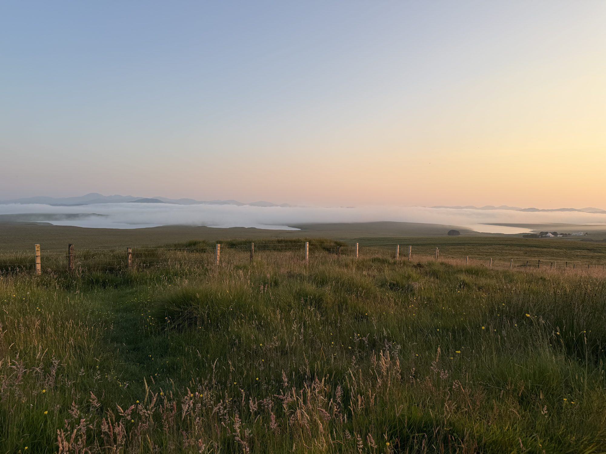

How I plan
You Can't Think Clearly in the Room Where You Got Tired

A change of place won't change your life on its own. But it can give you the room to see what might need to change, and to decide what you want to do about it.
I'm writing this partway through an 18-day crossing on Queen Mary 2, alone, in a cabin with an ocean view and access to room service, which is a reasonable arrangement for a person doing serious thinking and also not wanting to put on shoes. Out here, with no errands and fewer distractions, I've noticed I can be content on my own and lonely at the same time. I used to think one feeling had to cancel the other. It turns out they share a cabin quite well.
I was a leadership coach for years before I became a travel advisor. I know a little about asking questions, and a fair amount about booking things. This is where the two meet.
Why a change of place helps you think
A lot of daily life runs on cues: the chair where you answer email, the route to work, the person who expects you to fix the problem. Routines are useful. They can also keep you rehearsing the same responses long after those responses stopped helping.
A new place interrupts some of those cues. You have to figure out a train station, read a menu, decide whether to walk or rest. You're not suddenly a new person. You're meeting parts of yourself that routine keeps out of view. Do you like having a plan, or the freedom to change it? Are you energized by company, or relieved to get an hour alone?
Novelty alone isn't magic, though. A packed itinerary can keep you just as busy as home, only with more luggage. Research on people who live abroad suggests that time in a different culture can help people see their own identity more clearly, and that depth matters more than the number of countries visited. A holiday isn't living abroad, but the lesson carries: slower and deeper beats more.
A break, or a change?
It can be either. A break is worth having for its own sake. It doesn't need to earn its keep by producing a new philosophy of life.
But insight isn't the same as change. You can have a perfectly clear thought in Lisbon or on a ship at sea, then go home to your inbox and carry on exactly as before. I say this without judgment. The inbox is an accomplished opponent.
Home is where a new idea meets your actual life: your work, your people, your budget, your energy. So the question isn't only "what did I feel while I was away?" It's also "what still feels true now that I'm back?"
What I ask before I plan a trip
I want to know where you're going. I also want to know what you hope the trip will do for you.
- How do you want to feel when you get home? Rested, connected, proud, curious, less hurried? "I want to see Italy" is a great start. The feeling tells us how to plan it.
- What do you need a break from, and what do you want more of? A trip can give you distance from work without turning into a sprint through six cities.
- How much uncertainty sounds exciting, and how much sounds like one more thing to manage? Some people want a guide and a clear transfer plan. Others want open days and the freedom to decide at breakfast.
- Who else is coming? A milestone or family trip has to make room for different energy levels and different ideas of a good day.
Those answers change the itinerary. If you want rest, a late arrival followed by a dawn excursion isn't a clever use of your time. If the point is time with family, hours of transfers between stops take away from the very thing you came for.
How to leave room in a trip to think
Fewer stops. For a week, consider one base rather than a new hotel every night. For longer trips, two or three places, long enough in each to find a rhythm.
Some days lightly planned. Not a week of staring meaningfully at the sea, unless that's your thing. Just the option to follow a good conversation, go back to a neighborhood you liked, or do nothing at all without feeling you've failed the itinerary.
Comfort where it helps. A sensible arrival time, a reliable transfer, a room you can sleep in, a day between a long flight and a busy plan. I haven't found that insight requires a wet sleeping bag. Comfort isn't the enemy of growth. Often it's what lets you notice anything besides how tired you are.
Logistics handled. If a trip has a lot of moving parts, plan them so they don't eat the attention you were hoping to get back.
Bringing it home
Don't ask yourself to come home transformed by Monday. Leave a little space between the trip and the usual demands if you can, and notice what you miss, and what you're glad to come back to.
Then pick one small experiment rather than a whole new identity. If you loved the unhurried mornings, protect one morning a week. If talking to strangers made you feel more alive, find a way to do it locally. If what you want is more time with someone you love, put a date on the calendar before ordinary life fills it.
A trip can give you a clearer view of what you want. You still have to make the next choice at home, where the conditions are less cinematic and the laundry has not been impressed by your personal growth.
Planning a trip like this
I plan trips partly around who you want to be when you get home. Not because an itinerary can make that happen, but because a thoughtful trip gives you room to notice what matters, and a better chance of bringing it back.
If you're thinking about a trip that needs room to breathe, tell me about it.